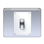

Desktopzusatz
Archivierte Anleitung
Dieser Artikel wurde archiviert, da er - oder Teile daraus - nur noch unter einer älteren Ubuntu-Version nutzbar ist. Diese Anleitung wird vom Wiki-Team weder auf Richtigkeit überprüft noch anderweitig gepflegt. Zusätzlich wurde der Artikel für weitere Änderungen gesperrt.

Panel¶
GNOME Panel - Panel der Desktop-Umgebung GNOME
Kontrollleiste - Panel der Desktop-Umgebung KDE Plasma
Xfce Panel - Panel der Desktop-Umgebung Xfce
fbpanel - ein sehr flexibel konfigurierbares Panel
Pypanel - ein in Python geschriebenes Panel
AllTray - Anwendungen in das Benachrichtigungsfeld oder die Traybar minimieren
Ubuntu-System-Panel - alternatives Startmenü für den GNOME-Desktop
Erweiterung des Fenstermanagers¶
Dies ist nur eine kleine Auswahl für GNOME und XFCE. Andere Fenstermanager haben viele der hier aufgezeigten Funktionen integriert.
Hintergrund¶
Desktop-Hintergrund - Hintergründe anzeigen, wechseln, etc.
Wallpaper-Tray - Hintergrund des GNOME-Desktops automatisch wechseln lassen
Basisfunktionen¶
Devilspie - Fenstereigenschaften dauerhaft beeinflussen
Brightside - die Ecken und Kanten von GNOME und Xfce nutzen (edge flipping)
WMIface - Kommandozeilen Werkzeug zur Interaktion mit dem Fenstermanager
Docks und andere Anwendungsstarter¶
KRunner - Standardstarter für KDE Plasma
GNOME Do - vielseitiger und flexibler Anwendungsstarter für den GNOME-Desktop
Launchy - ein Anwendugsstarter mit integrierter Web-Suche
Apwal - drapiert die Starter rund um den Mauszeiger
gestikk - Programme durch Mausgesten auf dem GNOME-Desktop starten
Avant Window Navigator - animierte Leiste am unteren Bildschirmrand
Cairo-Dock - animierte Leiste(n) und Applets für den Desktop
Docky - animiertes Dock mit Plugins
Dateimanager¶
Nautilus - Standard unter GNOME
Dolphin - Standard unter Kubuntu
Thunar - Standard unter Xfce
PCMan File Manager - Standard unter LXDE
Rox-Filer - einfach zu bedienen
Konqueror - der Klassiker der KDE Community
Terminals¶
Transparente und immer präsente Terminals kann man auf verschiedene Art erreichen:
Transparentes Terminal - ein transparentes Terminal auf dem Desktop anzeigen
Tilda - ein Terminal per Tastendruck (wie bei vielen Spielen) für den GNOME-Desktop
YaKuake - das KDE-Gegenstück zu Tilda
Informationen auf dem Desktop¶
Desktopsuchmaschinen
 - Dateien auf dem Computer suchen
- Dateien auf dem Computer suchenBenachrichtigungsdienst - Pop-Up-Nachrichten
XOSD - On-Screen-Display
Conky - Systemmonitor
Rainlendar - Desktopkalender
Desklets¶
GDesklets - Applets für einen bunten Desktop
adesklets - eine Alternative zu den GDesklets
Screenlets - andere Alternative
Plasma Miniprogramme - die Desklets der KDE Desktopumgebung
Cairo-Clock - analoge Uhr für den GNOME-Desktop
Cairo-Dock - animierte Leiste(n) und Applets für den Desktop
- Erstellt mit Inyoka
-
 2004 – 2017 ubuntuusers.de • Einige Rechte vorbehalten
2004 – 2017 ubuntuusers.de • Einige Rechte vorbehalten
Lizenz • Kontakt • Datenschutz • Impressum • Serverstatus -
Serverhousing gespendet von